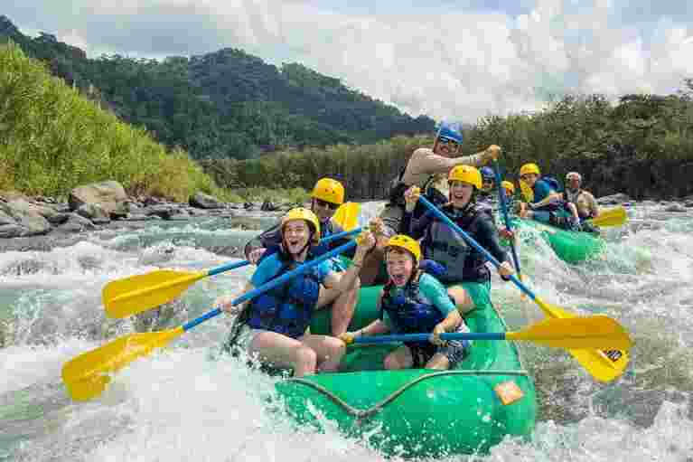
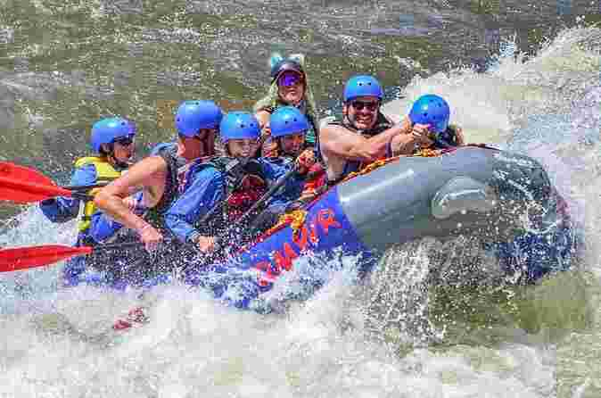
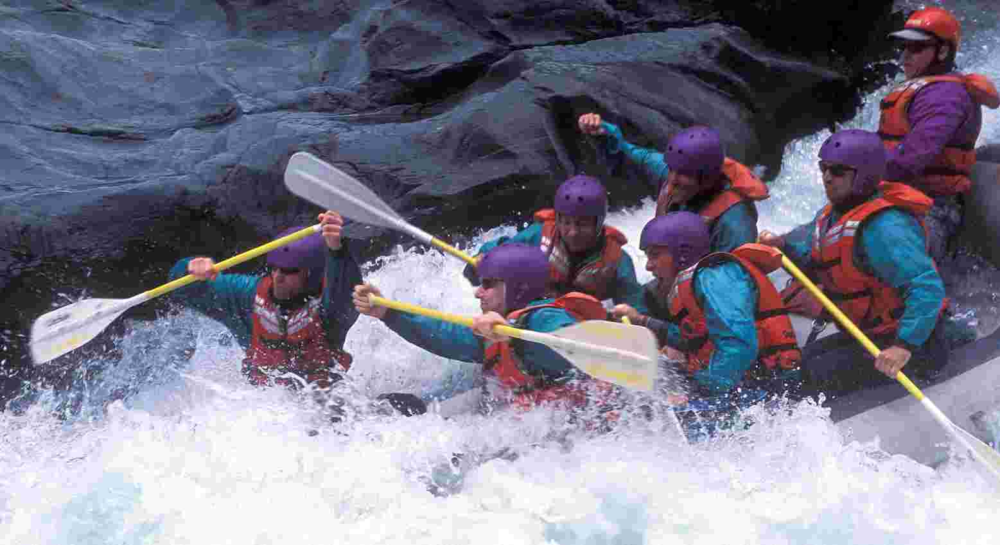

Our Trips
Choose your adventure and experience the excitement of the river. From family-friendly rafting to challenging whitewater expeditions, Exciting Expeditions has an adventure for everyone.
Family River Adventure

Difficulty: Class I–II
Duration: Half Day
Suitable for: Families, beginners and first-time rafters
Enjoy a fun and relaxing introduction to whitewater rafting with our Family River Adventure. This trip combines gentle rapids, beautiful scenery and plenty of opportunities to enjoy the river together.
Our experienced guides provide safety instructions and teach basic paddling techniques before the adventure begins. This trip is perfect for families and anyone experiencing rafting for the first time.
Canyon Rapids Expedition

Difficulty: Class II–III
Duration: 3–4 Hours
Suitable for: Adventurous beginners and experienced rafters
Ready for more excitement? The Canyon Rapids Expedition takes you deeper into the wilderness, where faster currents, larger waves and more challenging rapids await.
Your team will work together to navigate exciting rapids while enjoying spectacular canyon scenery. This adventure is perfect for people who want to progress beyond an introductory rafting experience.
Extreme Whitewater Challenge

Difficulty: Class III–IV
Duration: Full Day
Suitable for: Experienced and physically fit rafters
For those looking for the ultimate adrenaline rush, the Extreme Whitewater Challenge delivers a demanding day on the river.
Participants will encounter powerful rapids, larger waves, fast-moving currents and technical sections that require strong teamwork and precise paddling. Professional guides remain with the group throughout the expedition.
All Available Trips
| Trip | Difficulty | Duration | Best For | Highlights |
|---|---|---|---|---|
| Family River Adventure | Class I II | Half Day | Families & Beginners | Gentle rapids, scenery, swimming |
| Canyon Rapids Expedition | Class II III | 3 To 4 Hours | Intermediate Rafters | Canyon views, exciting rapids |
| Mountain Whitewater Adventure | Class III | Half/Full Day | Adventure Seekers | Big waves, mountain scenery |
| Extreme Whitewater Challenge | Class III IV | Full Day | Experienced Rafters | Powerful rapids, technical sections |
| Riverside Camping Expedition | Class II–III | 2 Days / 1 Night | Groups & Outdoor Enthusiasts | Rafting, camping and hiking |
| Ultimate River Expedition | Class IV | 2 To 3 Days | Experienced Rafters | Challenging rapids and wilderness |